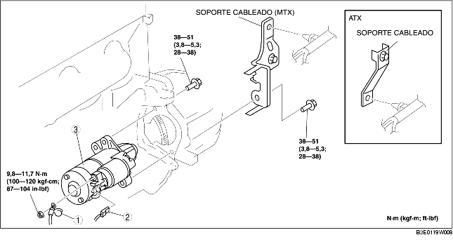

REMOCION/INSTALACION MOTOR DE ARRANQUE (ZJ, Z6)
B3E011918400W03
-
Atención
-
• Cuando los cables de batería están conectados, si se toca la carrocería con el terminal B del motor de arranque, se producen chispas. Esto puede causar heridas, fuego y daños a los componentes eléctricos. Desconectar siempre los cables negativos de la batería antes de efectuar las siguientes operaciones.
1. Quitar la tapa de la batería. [Véase REMOCION/INSTALACION BATERIA (ZJ, Z6)].
2. Desconectar el cable negativo de la batería.
3. Quitar la tapa inferior.
4. Quitar según el orden indicado en la tabla.
5. Instalar en el orden contrario al de la remoción.

.
|
1
|
Cable terminal B
|
|
2
|
Conector terminal S
|
|
3
|
Motor de arranque
|